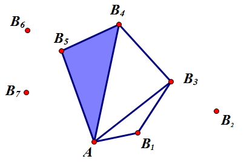
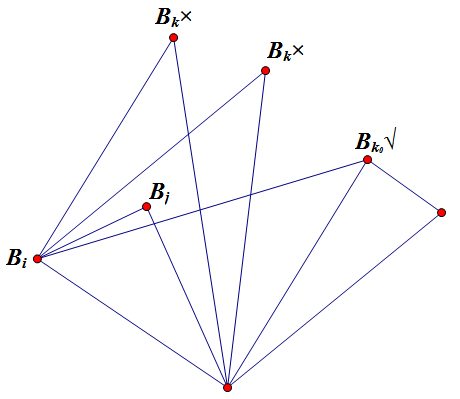

Project Euler 252
题目
Convex Holes
Given a set of points on a plane, we define a convex hole to be a convex polygon having as vertices any of the given points and not containing any of the given points in its interior (in addition to the vertices, other given points may lie on the perimeter of the polygon).
As an example, the image below shows a set of twenty points and a few such convex holes. The convex hole shown as a red heptagon has an area equal to $1049694.5$ square units, which is the highest possible area for a convex hole on the given set of points.

For our example, we used the first $20$ points $(T_{2k−1},T_{2k})$, for $k=1,2,\dots,20$, produced with the pseudo-random number generator:
$\begin{aligned}
S_0&=290797\\
S_{n+1}&=S_n^2 \text{ mod } 50515093\\
T_n&=(S_n \mod 2000)-1000
\end{aligned}$
i.e. $(527,144), (−488,732), (−454,−947), \dots$
What is the maximum area for a convex hole on the set containing the first $500$ points in the pseudo-random sequence?
Specify your answer including one digit after the decimal point.
解决方案
本题将尝试找到所有的凸空洞，并且求出它们的最大值。为了减少程序运行时间，我们尽量减少凸空洞的重复寻找次数，采取的措施是：枚举图中的每一个点$A(x_i,y_i)$作为整个坐标系的原点，将满足这些条件的点$(x_j,y_j)$舍去：$y_j<y_i\vee (y_j=y_i \wedge x_j<x_i)$.那么剩下的这些点中，$A$是最下方的，考虑以$A$为空洞的一个特定点进行枚举。
那么，将所有的点都按照极角进行排序。考虑如下图的形式，主要思想是从逆时针方向起找到一个个三角形，这些三角形合并后恰好形成一个凸包。

假设当前一共有$m$个点，这些点极角排序后，分别标记成$B_1,B_2,\dots,B_m$。
考虑状态$f(i,j)(1\le j< i\le m)$表示逆时针方向上，以$\triangle AB_iB_j$为最后一个三角形的凸包中，最大的面积值。需要注意的是，不存在其它点$B_k$使得$B_k$落在$\triangle AB_iB_j$的内部（不包括边界）时，并且$O,B_i,B_j$不共线时，$f(i,j)$才是一个合法状态。对于所有不合法的状态，状态值$f$为$0$。
那么，$f$的状态转移方程就可以写成如下形式：
只要点$B_k$在向量$\overrightarrow{B_jB_i}$的左侧，从而$B_i,B_j,B_k$形成一个凸形。那么状态$f(j,k)$所代表的凸包和$\triangle AB_iB_j$合并形成了一个新凸包。
在枚举$i$时，需要先顺时针找到第一个$j$，使得$O,B_i,B_j$先不共线。然后找到所有的$k$使得$\overrightarrow{B_jB_i}\times\overrightarrow{B_jB_k}>0$，然后直接进行转移。如果直接这样子实现，那么每次枚举一个原点，就需要$O(n^3)$的转移，总体时间复杂度为$O(n^4)$.
考虑如此进行：如果我们已经确定了$f(i,j)$是一个合法状态，那么接下来就去寻找$k$，使得$f(j,k)$也是一个合法状态。如果找到一个最大的$k_0$使得$\overrightarrow{B_jB_i}\times\overrightarrow{B_jB_{k_0}}>0$，那么对于$k=k_0+1,k_0+2,\dots,j-1,\overrightarrow{B_jB_i}\times\overrightarrow{B_jB_{k}}<0$都成立，也就是说，$B_j$在$\triangle OB_iB_k$内部，那么$f(i,k)$都不是合法的，其都值为$0$，如下图所示。

对于所有状态$1\le k’\le k_0$，有以下说法：
- $B_{k’}$在向量$\overrightarrow{B_iB_{j}}$左侧，它们都是不合法的，因为$B_j$在$\triangle AB_iB_k$内部。
- 其余情况都可以进行转移。
那么状态转移方程就可以改写成：
通过数据结构维护，这个递推式可以通过$O(n^2)$求出来。
这个思路还提供了一种快速找到合法状态的方案：对于一个状态$f(i,j)$，计算出来了$k_0$后，这个$k_0$将作为下一次求解的$j$。
另外，对于任意两点$B_i,B_j,S_{\triangle AB_i,B_j}=|\overrightarrow{AB_i}\times\overrightarrow{AB_j}|$.
最终答案为$\max_{i=1}^m\{\max_{j=1}^if(i,j)\}$.
代码
1 |
|